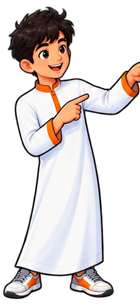
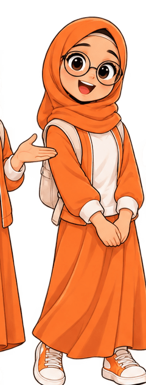
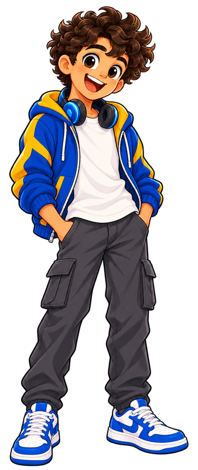
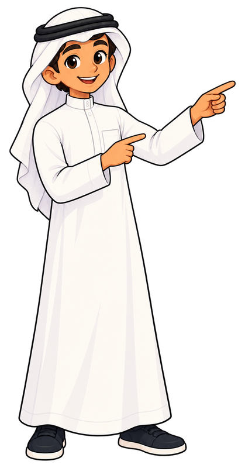

Exit
🔎
0
1/6
Case file: What Really Happened?
Find the evidence
✅ TRUE
❌ FALSE
Case file
Story Detective
Find the evidence and crack the case!
▶ Play
CASE CLOSED




Mystery solved!
↺ New case
Back